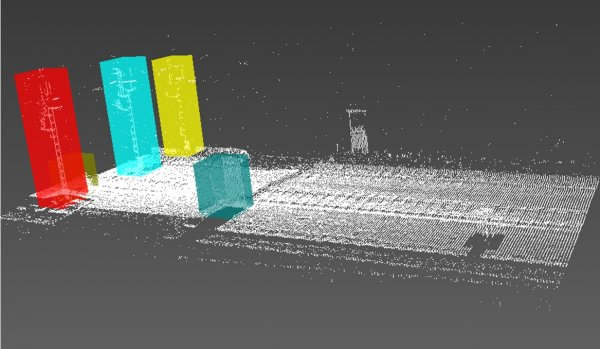
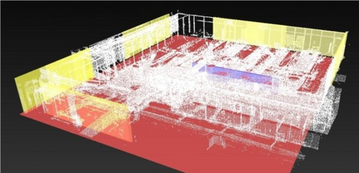
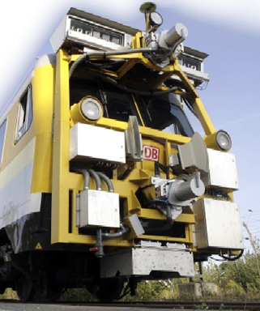

WiDOP
Présentation
Le projet WiDOP est un projet en collaboration avec l’institut de recherche appliquée i3mainz dont l’objectif est la détection automatique d’objets dans un nuage de points 3D basée sur les connaissances métiers. Ce projet partenarial, impliquant la Deutsche Bahn, Fraport Aéroport de Francfort et Metronom sous-traitant de la Deutsche Bahn, vise à améliorer le processus métier de détection d’objets proches du chemin de fer. Les processus métiers de la DB et de Fraport sont différents, car le contexte est différent. Toutefois, le temps de recherche manuellement des objets dans la scène représente le point commun de la problématique de ces deux corps de métier.
Ce projet est une collaboration entre deux équipes du laboratoire Le2i. La première est l’équipe SISI (Système d’Information, Système d’Image), dont les membres participent au projet CheckSem pour toute la partie traitement des connaissances. La deuxième équipe et l’équipe SINC (Systèmes d’Imagerie Non-Conventionnelle) située à Auxerre pour toute la partie traitement du signal. Ainsi, le projet WiDOP met à disposition des processus métiers une méthode d’analyse sémantique et topologique 3D pour l’automatisation du traitement de l’ensemble des objets 3D contenus dans un nuage de points 3D. De cette manière, il est possible de définir des tâches de réponse aux questions topologiques 3D ou inférence topologique grâce à la modélisation des connaissances sur les processus opérationnels d’analyses topologiques. Pour ce fait, de nouveaux éléments nommés « built-ins » topologiques, entrant dans la composition de programmes logiques de type SWRL, ont été conçus et développés, permettant de définir des règles topologiques entre les éléments géométriques. La règle suivante recherche les « Mast » ou poteau électrique à une distance de 50m d’un autre « Mast » et dont la particularité est d’être verticale. Dans ce cas, cet objet est également un « Mast ». Les deux figures suivantes montrent les débuts de résultats de la détection d’objets dans un nuage de point. La détection est représentée par une boîte englobante dont la couleur représente la nature sémantique.
Mast(?verti1) ∧ VerticalBB(?verti2) ∧ hasDistanceFrom(?verti1, ?verti2, 50) → Mast(?verti2)
Règle SRWL utilisant un « built-in » topologique

Figure 1. Détection et annotation d’éléments dans le contexte de la Deustche Bahn

Figure 2. Détection et annotation d’éléments dans le contexte métier de Fraport

Figure 3. Locomotive de la DB avec laser scanner 3D
Données sur le projet
L’équipe de projet
- Helmi Ben Hmida, PhD
- Hung Quoc Truong, PhD
- Frank Boochs
- Christophe Cruz
- Adlane Habed
- Christophe Nicolle
- Yvon Voisin
Coopération
- LE2I - Université de Bourgogne
- Metronom Automation GmbH
- DB Netz AG
- Fraport AG
- FARO Europe
- Fraunhofer Institut d’économie industrielle et de mathématiques
- Université de Bochum
Financé par
Ministère fédéral de l’Education et de la Recherche, FHprofUnt financement 2009
Durée du projet
Octobre 2009 à décembre 2012
Publications
- Ben Hmida Helmi, Christophe Cruz, Christophe Nicolle and Frank Boochs, "From 9-IM Topological Operators to Qualitative Spatial Relations using 3D Selective Nef Complexes and Logic Rules for bodies" in KEOD 2012, 4th International Conference on Knowledge Engineering and Ontology Development, 4-7 October 2012, Barcelona, Spain.
- Ben Hmida Helmi, Christophe Cruz, Christophe Nicolle and Frank Boochs, " Knowledge-Driven Method for Object Qualification in 3D Point Cloud Data," in KES 2012, 16th International Conference on Knowledge-Based and Intelligent Information & Engineering Systems, 258-267, 10-12 September 2012, San Sebastian, Spain.
- Ben Hmida Helmi, Christophe Cruz, Christophe Nicolle and Frank Boochs, "From Quantitative Spatial Operator to Qualitative Spatial Relation Using Constructive Solid Geometry, Logic Rules and Optimized 9-IM Model, A Semantic Based Approach" in IEEE-CSAE 2012, the 2nd International Conference on Computer Science and Automation Engineering, 25-27 Mai 2012, Zhangjiajie, China.
- Ben Hmida Helmi, Christophe Cruz, Christophe Nicolle and Frank Boochs, "From 3D Point Clouds to Semantic Objects : An Ontology-Based Detection Approach," in Keod 2011, International Conference on Knowledge Engineering and Ontology Development, Paris, France, 2011.
- Ben Hmida Helmi, Christophe Cruz, Christophe Nicolle and Frank Boochs, " Toward the automatic generation of semantic VRML model from unorganized 3D point clouds," in SEMAPRO 2011, The Fifth International Conference on Advances in Semantic Processing, Lisbon, Portugal, 2011.
- Frank Boochs , Ben Hmida Helmi, A. Marbs, H. Truong, A. Karmacharya, C. Cruz, A. Habed, C. Nicolle, and Y. Voisin, "Integration of knowledge to support automatic object reconstruction from images and 3D data," in International Multi-Conference on Systems, Signals & Devices, Sousse Tunisia, March 22-25, 2011.
- Ben Hmida Helmi, Christophe Cruz, Christophe Nicolle and Frank Boochs. 2010. “Semantic-based Technique for the Automation the 3D Reconstruction Process,” Fourth International Conference on Advances in Semantic Processing, 191-198, Florence, Italy, IARIA, October 2010.
- Ben Hmida Helmi, Andreas Marbs, Hung Truong and Frank Boochs. 2010. “Wissensbasierte Objekterkennung in 3D-Punktwolken und Bildern,” DGPF-Tagungsband, 3-Ländertagung D-A-CH Conference Wien, pp. 220-227.
- Ben Hmida Helmi, Andreas Marbs, Hung Truong and Frank Boochs. 2010. “Integration of knowledge onto the detection of object in point clouds,” PCV Photogrammetric computer vision and image analysis Conference Paris, pp. 143-148.
- Ben Hmida Helmi, Christophe Cruz, Christophe Nicolle and Frank Boochs, “Knowledge Base Approach for 3D Objects Detection in Point Clouds Using 3D Processing and Specialists Knowledge” in International Journal on Advances in Intelligent Systems, 1-14, ISSN 1942-2679 2012.
- Ben Hmida Helmi, Christophe Cruz, Christophe Nicolle and Frank Boochs, “From unstructured 3D Point Clouds to Structured Knowledge - A semantics Approach”, in Semantics, ISBN 979-953-307-613-2, 2011.